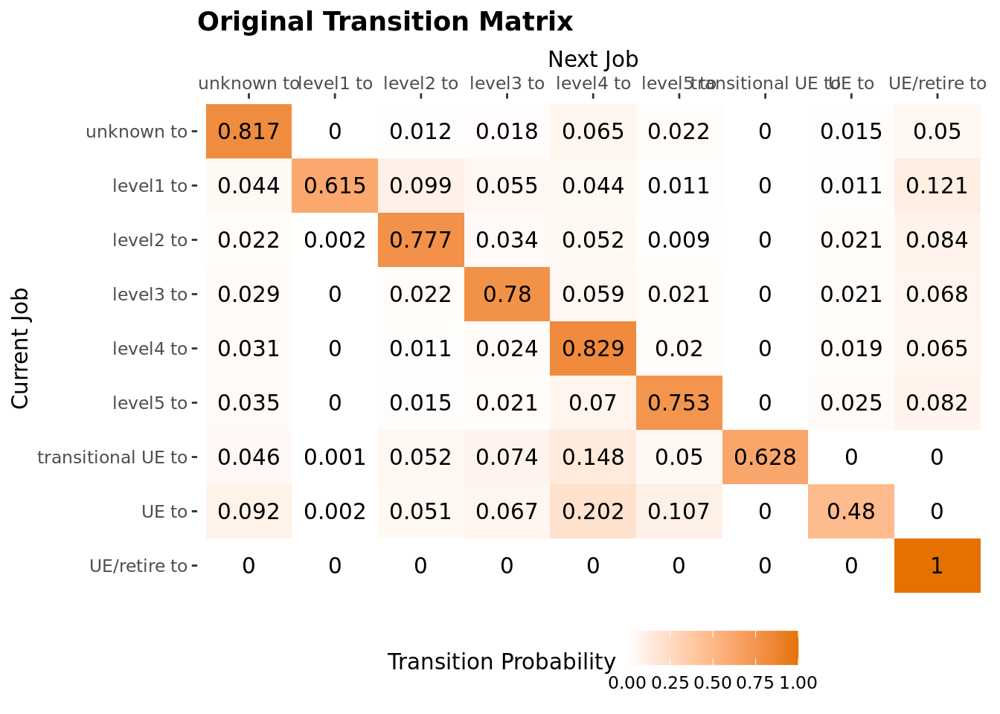
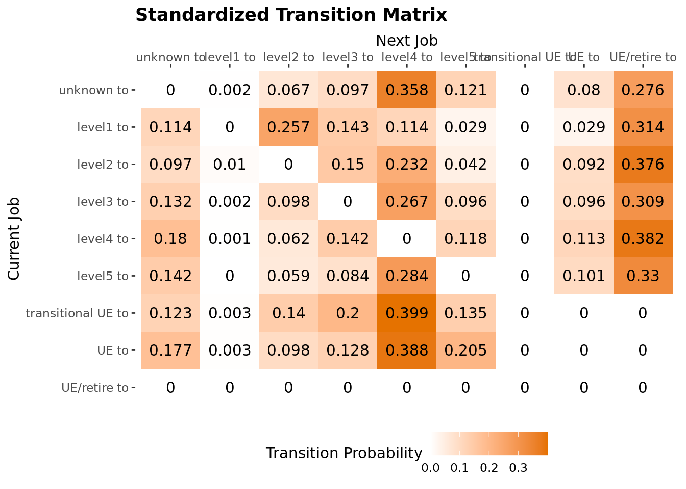
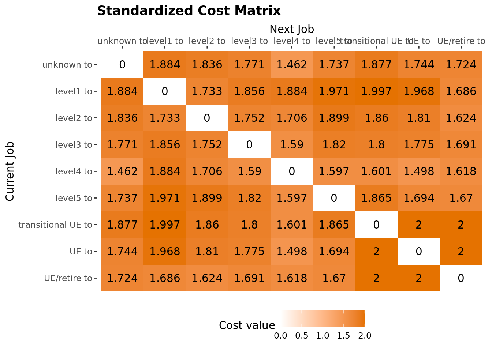
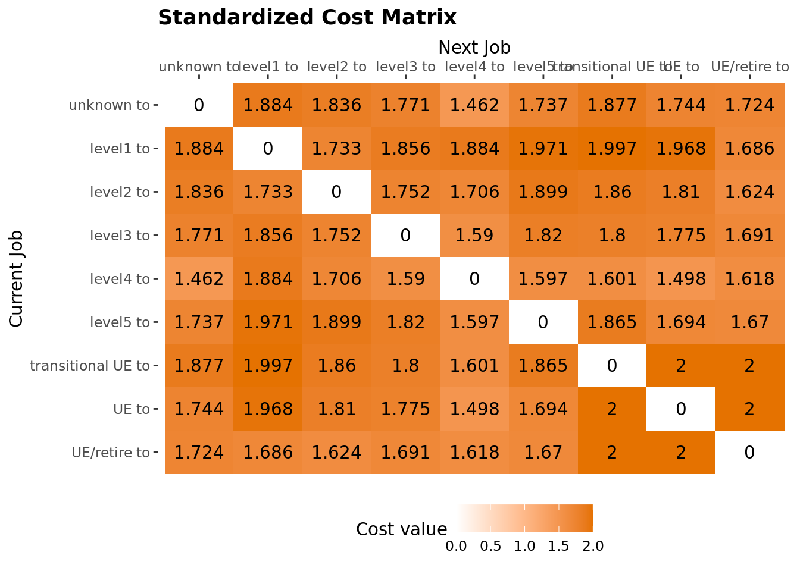
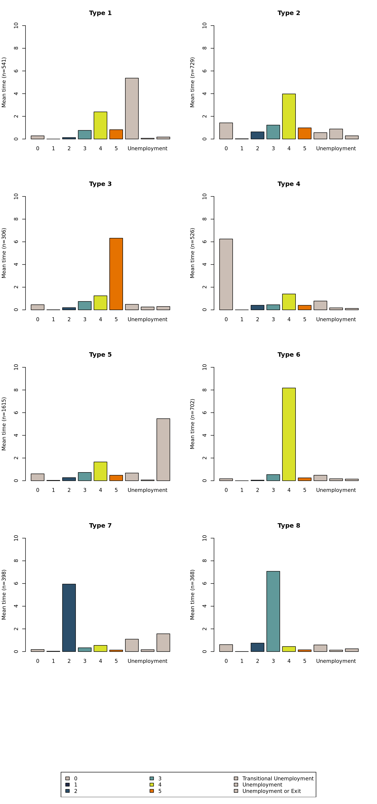
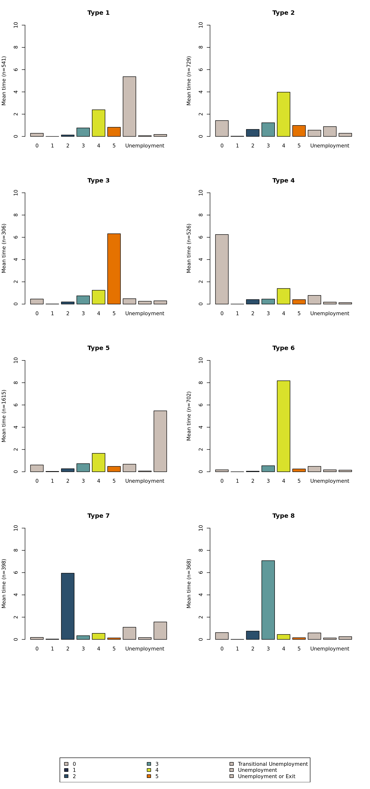
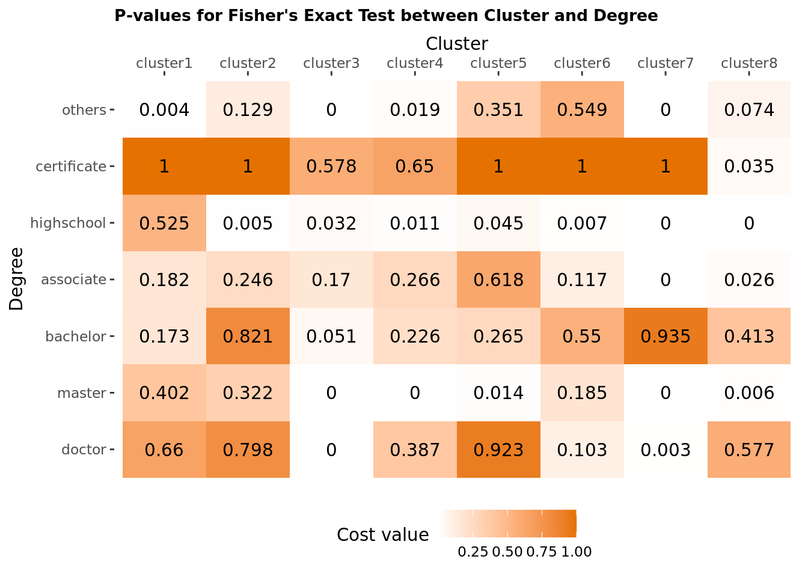
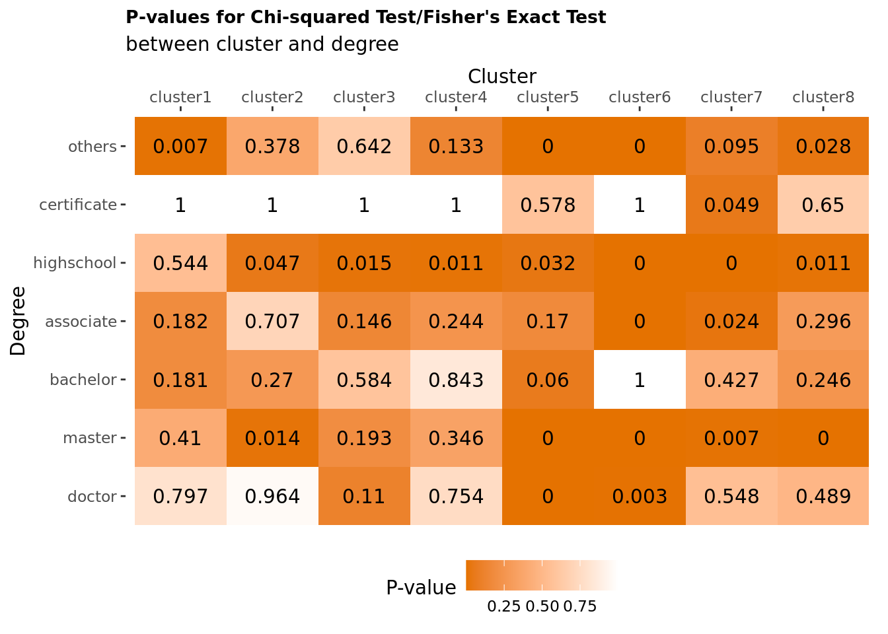

Sequence Clustering
Clustering post-military veteran career sequences and exploring these results
Transition Matrix Normalization
There are nine levels of job state: job zone (level) 1, job zone (level) 2, job zone (level) 3, job zone (level) 4, job zone (level) 5, transitional unemployment, unemployment, unemployment or retirement, and unknown job zone.
Transition matrix is composed of transition rates between each pair of states. Transition matrix has dimension \(k \times k\), k being the number of job states, Since we have 9 job states, our transition matrix has dimension \(9 \times 9\).
Darker the color, higher the transition probability between two states. Before standardization, the diagnal, meaning no change in state, have the highest probability.

Substitution-Cost matrix reflects the cost for substituting each job state with another. We used transition rate to construct substitution-cost matrix using the formula for i being the current job level, and j being the next job level: \[SC(i,j) = cval -P(i,j) -P(j,i)\]
 

Clustering
There are 5185 sequences among our sample, and there are 2113 (440.8%) distinct sequences. We identified 8 types of clusterings. We have type 1, 4, 5, 6 clusters mainly composed of veterans in job zone 4. Specifically, veterans in type 1 cluster had few years' of transitional unemployment after exiting military before their job-zone-level 4 jobs.
We do observe a career promotion among veterans in type 2 cluster where they started with job zone 3 and went into job zone 4.
The remaining type 3, 7, 8 do no exibit a change in post-military career. Type 3 cluster is composed of jobs in job zone 5. Type 7 cluster is composed of jobs in job zone 1. And type 8 cluster is composed of jobs in job zone 3.
 

To understand how veterans developed different career trajectories, we investigated the relationship between gender, highest degree level and the career trajectory cluster they were associated with.
Do veterans' education background influence their career trajectory?


Do Female and Male Veterans have different career trajectory?
In our sample, we have 15.9% (N=824) female veterans, 84.1% (N=3666) male veterans. We conducted \(\chi^2\) test. Using 0.05 as the critical value, we conclude that female is statistically different from male in cluster 2 (p=0.0083), 5 (p<0.001), 6 (p=0.017), and 8 (0.042). 
##
## female male
## 1 70 398
## 2 91 537
## 3 37 219
## 4 74 387
## 5 316 1077
## 6 92 528
## 7 71 272
## 8 73 248## [1] 5.220941e-02 8.293374e-03 1.149379e-01 1.994392e-01 6.078961e-07
## [6] 1.739298e-02 2.729629e-01 4.198785e-02## [1] FALSE TRUE FALSE FALSE TRUE TRUE FALSE TRUEReferences
[List your references here using APA format (or at least standardize all of the references using the same format).]